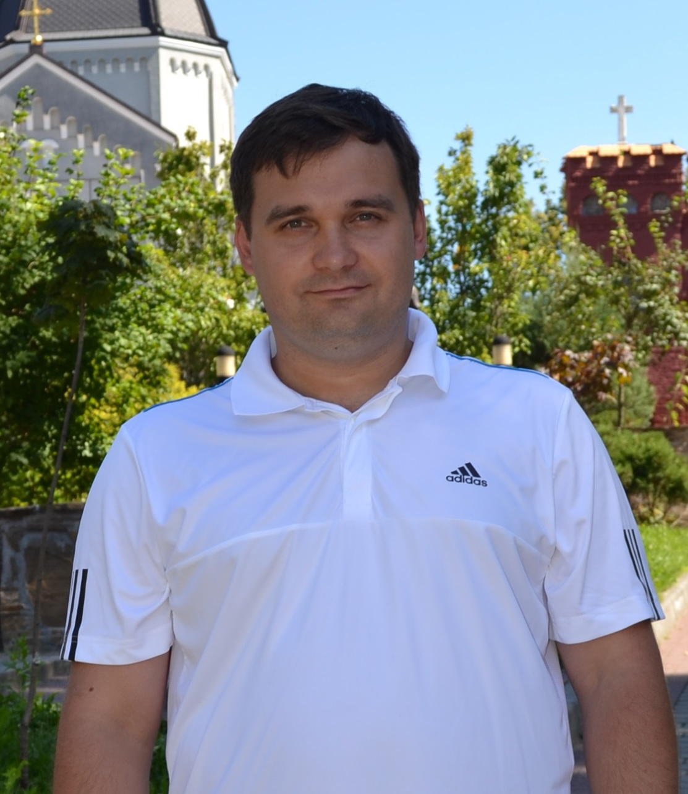

Кухарчук Валерий Валерьевич

Номер телефона: +38 096 650 2931
email: kuval2010@gmail.com
Опыт работы
Технические навыки
- С, Java
- postgreSQL / MongoDB
- Git / GitHub
Знание языков
- Украинский (свободно)
- Русский (свободно)
- English (intermediate)
Образование
-
Украинская государственная академия железнодорожного транспорта (2001-2006)
специальность: автоматизация на транспорте
-
Овручская СОШ №3, г. Овруч, Житомирская обл. (1991-2001)